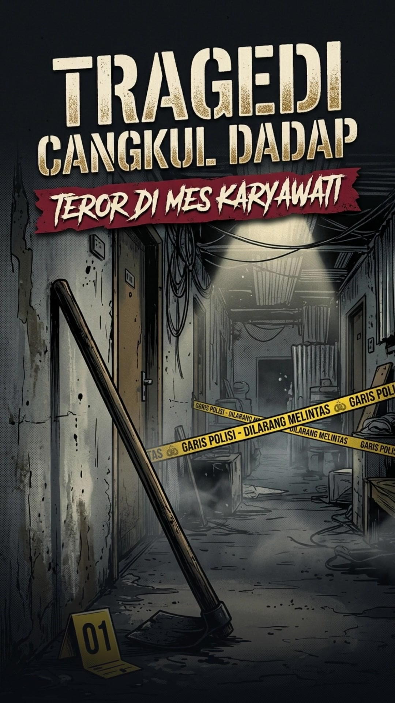
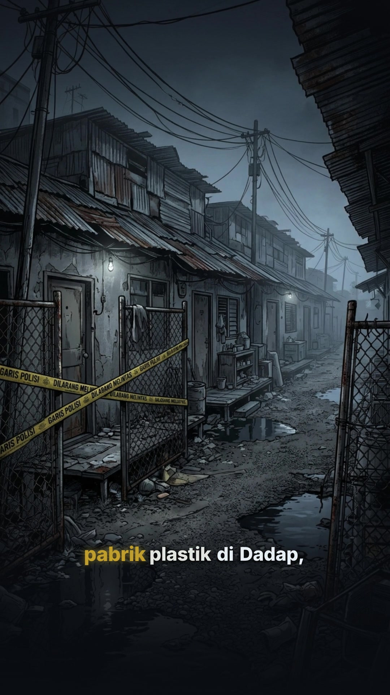
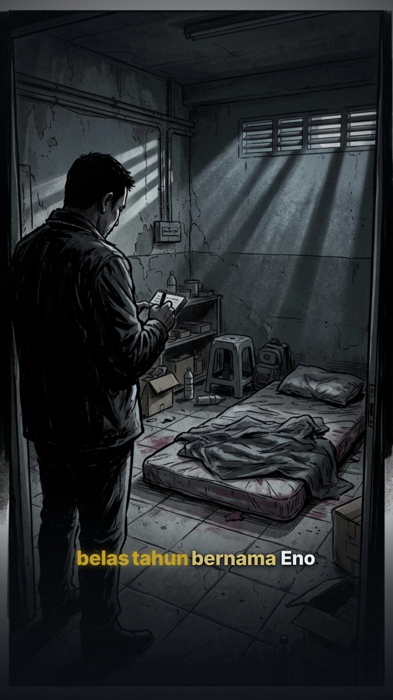
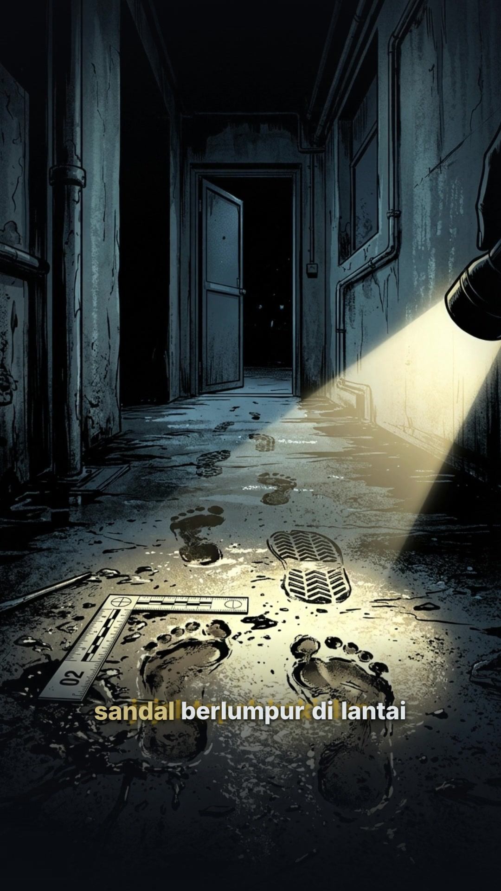

Investigasi Forensik Lengkap Pembunuhan Sadis Eno Farihah (Dadap, Kosambi, Tangerang 2016) • Detikcom Archive
Babak 1 (0-25s): Penemuan kamar mes 17 yang tergembok dari luar & olah TKP awal Inafis.
Babak 2 (25-50s): Temuan ganjil cangkul proyek, sidik jari darah, & hilangnya HP Polytron korban.
Babak 3 (50-85s): Kilas balik SMS 23.30 WIB, penolakan RAL, dendam Arif "pahit", & sakit hati Imam.
Babak 4 (85-110s): Konspirasi gelap tiga pria asing, eksekusi tengah malam, & pembuangan bukti ke rawa.
Babak 5 (110s+): Pelacakan sinyal BTS cyber crime, penggerebekan 1x24 jam, & vonis mati PN Tangerang.

0.8s Cover Hook
6.0s Mes Dadap
30.0s Bukti Cangkul
70.0s Sakit HatiKamar mes nomor 17 di Dadap, Kosambi, Tangerang, menyimpan saksi bisu salah satu kasus kriminal paling mengguncang Indonesia. Eno Farihah (18), karyawati pabrik plastik ditemukan tewas mengenaskan setelah dianiaya oleh 3 pria yang awalnya saling tidak kenal, namun dipersatukan dendam akibat penolakan asmara. Melalui kejelian Tim Inafis Polda Metro Jaya dalam membaca sidik jari pada gagang cangkul serta pelacakan sinyal ponsel korban, kasus ini terungkap kurang dari 24 jam. Simak investigasi forensik lengkap dan vonis peradilan sang pelaku. #EnoFarihah #TragediCangkul #TrueCrimeIndonesia #Detikcom #KasusKriminal #Investigasi #HukumDanKriminal #PoldaMetroJaya
Misteri kamar mes 17 Dadap Tangerang... 😱 Tiga pria yang tak saling kenal bersekongkol menghabisi nyawa Eno Farihah hanya karena sakit hati ditolak! Jejak sidik jari di gagang cangkul dan sinyal HP membongkar para pelaku dalam waktu kurang dari 24 jam! ⚖️ #truecrime #enofarihah #kasusviral #misteri #kriminal #tangerang #kisahnyata #hukumanmati
Tragedi Cangkul Dadap Tangerang: Kisah Nyata Pembunuhan Eno Farihah. Sebuah kasus kelam di mana amarah penolakan asmara menyatukan tiga pria asing dalam satu malam kejahatan terencana. Penyelidikan ilmiah Inafis dan pelacakan digital Polda Metro Jaya berhasil mengamankan seluruh tersangka kurang dari 1x24 jam hingga vonis hukuman mati diketok di pengadilan. Source: Detikcom Arsip Berita Kriminal. . . #TrueCrime #KasusKriminal #EnoFarihah #Detikcom #Investigasi #HukumMati #Storytelling #ViralIndonesia